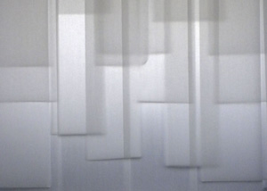

Modesto Covarrubias: Liminal View artwork Modesto Covarrubias, detail, Liminal, 2010, paper, Courtesy of the Artist
|
 |
Modesto Covarrubias: Liminal is an immersive site-specific installation exploring ideas related to shelter, memories and imagined space. As the first emerging artist to participate in the ICA’s series of immersive solo exhibitions, Covarrubias joins established Bay Area artists including Theodora Varnay Jones, Christel Dillbohner, Chris Dorosz, Lewis DeSoto and Tim Horn, who have also presented large-scale installations in the ICA’s Focus Gallery. As a child, Covarrubias built forts, houses and spaceships – drawing elaborate plans and maps to render his creations. He has long been involved in investigations of space and how it can alter and be altered by one’s mental state. And just as the artist created forts, rooms and spaces as a child to transport himself into fantasy worlds, he employs similar processes today to explore and portray his present-day emotions and experiences.
Covarrubias’ multi-media pieces are constructed primarily from paper attached or hung from a room–sized armature made from materials including steel wire, monofilament, wood, and PVC pipe.
Modesto Covarrubias is a San Jose-native who lives and works in Berkeley, CA. Covarrubias recently graduated with an MFA in Studio Art from Mills College, and in 2005 earned a BFA in Photography from the San Francisco Art Institute. Covarrubias’ work has been exhibited in Italy, New York City and throughout the Bay Area.
San
Jose Institute of Contemporary Art 560 South First Street San Jose, CA 95113 tel (408) 283-8155 fax (408) 283-8157 |